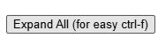
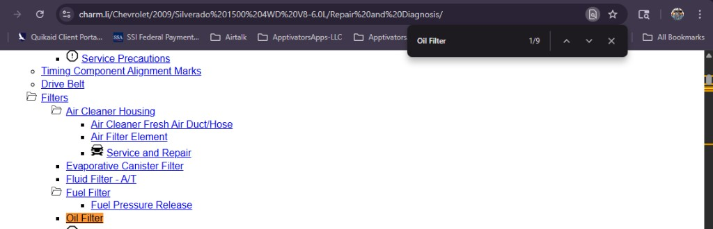

Click a manual link to open Operation CHARM in a new tab (same site you use in the browser).
Manual
Load data to search.


Click a manual link to open Operation CHARM in a new tab (same site you use in the browser).
Load data to search.